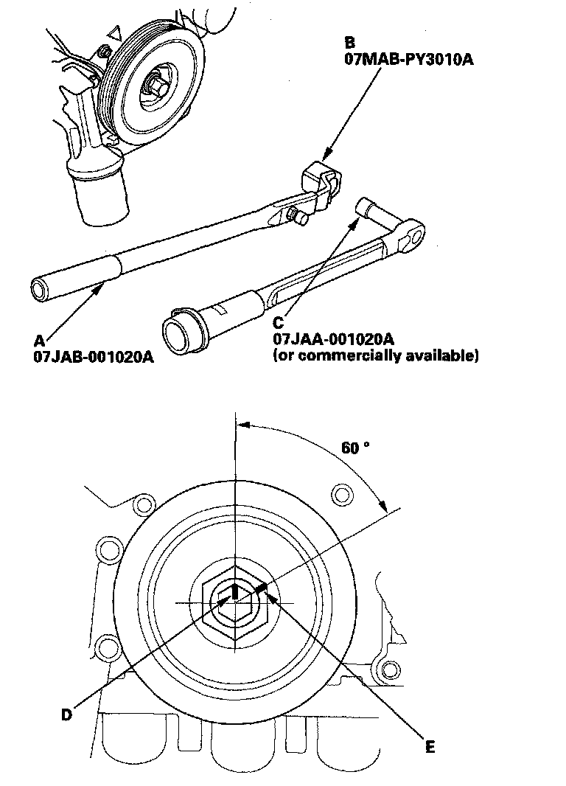

Tightening Torques
Cylinder HeadMeasure the diameter of each cylinder head bolt at point A and point B.

If either diameter is less than 11.3 mm (0.44 in.), replace the cylinder head bolt.
Tighten the cylinder head bolts in sequence to 30 N-m (3.0 kgf-m, 22 lbf-ft).

After torquing, tighten all cylinder head bolts in two steps (90° per step). If you are using a new cylinder head bolt, tighten the bolt an extra 90°.
Intake Manifold

Install the intake manifold. Tighten the bolts and nuts sequentially in two or three steps.
Main Bearing Cap
Install the bearings (A) and bearing caps (B) with the arrow (C) facing the timing belt end of the engine.

Apply new engine oil to the bolt threads and flanges. Torque the bolts (B) to 20 N-m (2.0 kgf-m, 14 lbf-ft).

Tighten the bolt until the mark on the bolt head lines up with the mark on the connecting rod (turn the bolt 90°).
Connecting Rod Bearing Cap
Tightening Torque 20 N-m (2.0 kgf-m, 14 lbf-ft) + 90°
Crankshaft Pulley
Torque the bolt to 65 N-m (6.5 kgf-m, 47 lbf-ft) with a torque wrench and heavy duty 19 mm socket (C).
Mark the bolt head (D) and crankshaft pulley (E) as shown, then tighten the bolt an additional 60° (The mark on the bolt head lines up with the mark on the crankshaft pulley).

Oil Pump
Oil pump (C)
Water Pump